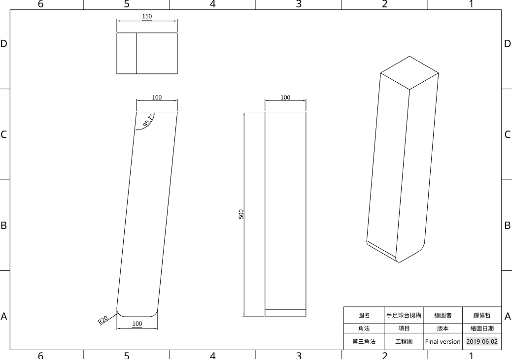
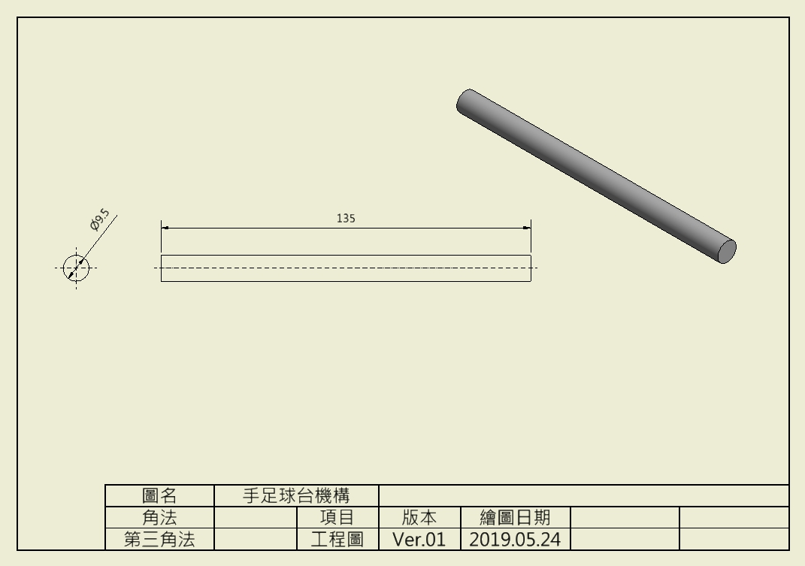

細部設計與 BOM
手足球零件格式說明
手足球零件格式說明
零件 BOM
手足球零組件材料表 (含零組件下載連結)
零組件下載連結(Final version:螺旋桿運動)(40623224)
版本:Onshape(可以自行利用Onshape轉換成其他畫圖軟體的檔案，例如:Solidworks)
#檔案連結裡面包含所有零件的畫製過程以及工程圖與爆炸分解圖和組合圖，使用模組化的製程讓觀閱者可以自行觀看內容並且自行下載。
零組件下載連結(第一版活塞與連桿)(40623224)
版本:inventor2017(有STL檔可以自行用Onshape、Solidworks開啟)
零件尺寸圖
#連結在工程圖下方，請自行點取
(手足球台工程圖Final version - 40623224)
(手足球員工程圖Final version- 40623224)
(手足球台握把A、B工程圖Final version - 40623224)
(手足球台握把C、D工程圖Final version - 40623224)

(手足球握把擋塊工程圖 Final version - 40623224)

(送球機構足球檯桌角工程圖Final version- 40623224)
(送球機構工程圖Final version - 40623224)
(送球機構-螺旋桿工程圖Final version - 40623224)

(手足球台工程圖ver.02 - 40623224)

(手足球台工程圖ver.03 - 40623224)

(手足球人工程圖ver.02 - 40623224)

(送球機構滾道工程圖ver.01 - 40623224)(不採用)

(送球機構圓柱工程圖ver.01 - 40623224)(不採用)

(送球機構轉輪工程圖ver.01 - 40623224)(不採用)

(送球機構活塞工程圖ver.01 - 40623224)(不採用)

(送球機構活塞桿工程圖ver.01 - 40623224)(不採用)

(送球機構活塞支撐桿工程圖ver.01 - 40623224)(不採用)

(送球機構足球檯桌角工程圖ver.01 - 40623224)

(送球機構連結桿工程圖ver.01 - 40623224)(不採用)
(送球機構連結桿B工程圖ver.01 - 40623224)(不採用)

(手足球人草圖 - 40623238)

(手足球台握把A、B ver.01 - 40623238)

(手足球台握把C、D ver.01 - 40623238)

(手足球握把擋塊 ver.01 - 40623238)
零件部分組裝圖
(手足球桿A組合Final version - 40623224)
(手足球桿B組合Final version - 40623224)
(手足球桿C組合Final version - 40623224)
(手足球桿D組合Final version - 40623224)
(零件部分組裝圖Final version - 40623224)
零件部分組裝圖展示(40623224)(第一版):
零件部分組裝圖ver.01(40623238):

零件部分組裝圖ver.02(40623224):

零件部分組裝圖ver.03(40623224):


3D 零組件爆炸圖
(3D 零組件爆炸圖Final version - 40623224)
3D 零組件爆炸圖展示(40623224)(第一版):
3D 零組件爆炸圖ver.01(40623238):

3D 零組件爆炸圖ver.02(40623224):

參數設計與繪圖 << Previous Next >> V-rep 動態模擬